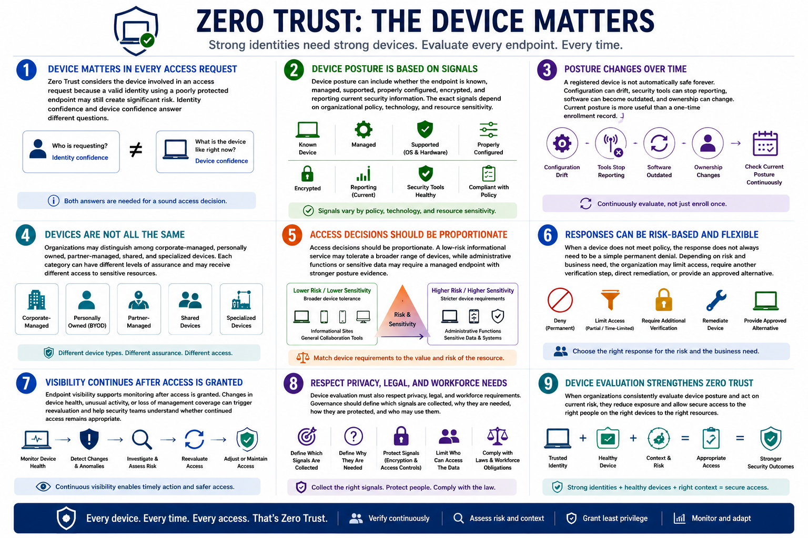

What Is Zero Trust?
Device and Endpoint Trust
Connecting to LMS... Progress: in progress
Version 1.0 | Date: 2026-06-16 | Educational overview of Zero Trust concepts.

Narration
Zero Trust considers the device involved in an access request because a valid identity using a poorly protected endpoint may still create significant risk. Identity confidence and device confidence answer different questions.
Device posture can include whether the endpoint is known, managed, supported, properly configured, encrypted, and reporting current security information. The exact signals depend on organizational policy, technology, and resource sensitivity.
A registered device is not automatically safe forever. Configuration can drift, security tools can stop reporting, software can become outdated, and ownership can change. Current posture is more useful than a one-time enrollment record.
Organizations may distinguish among corporate-managed, personally owned, partner-managed, shared, and specialized devices. Each category can have different levels of assurance and may receive different access to sensitive resources.
Access decisions should be proportionate. A low-risk informational service may tolerate a broader range of devices, while administrative functions or sensitive data may require a managed endpoint with stronger posture evidence.
When a device does not meet policy, the response does not always need to be a simple permanent denial. Depending on risk and business need, the organization may limit access, require another verification step, direct remediation, or provide an approved alternative.
Endpoint visibility supports monitoring after access is granted. Changes in device health, unusual activity, or loss of management coverage can trigger reevaluation and help security teams understand whether continued access remains appropriate.
Device evaluation must also respect privacy, legal, and workforce requirements. Governance should define which signals are collected, why they are needed, how they are protected, and who may use them.